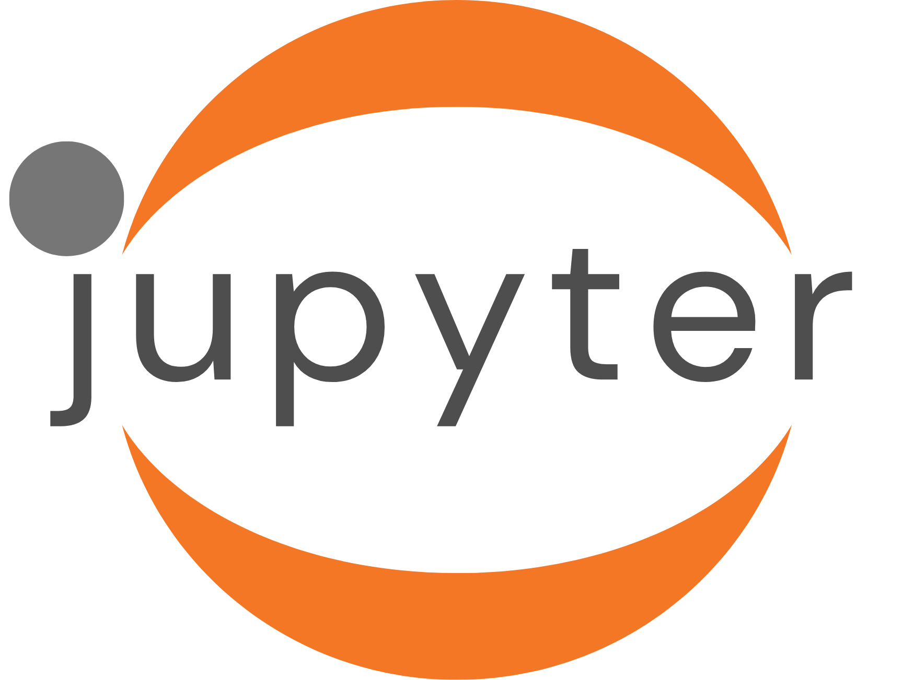

from ipyleaflet import Map, Marker, basemaps, basemap_to_tiles
m = Map(
basemap=basemap_to_tiles(
basemaps.NASAGIBS.ModisTerraTrueColorCR, "2017-04-08"
),
center=(51.476852, -0.000500),
zoom=4
)
m.add_layer(Marker(location=(51.476852, -0.000500)))
mHave you heard about Jupyter Widgets for embedding interactivite elements in Jupyter documents?

Well! Because Quarto uses Jupyter for rendering Python content that means you can also use these widgets in your data blog!
As an example, here’s a map centered on the Royal Observatory Greenwich: